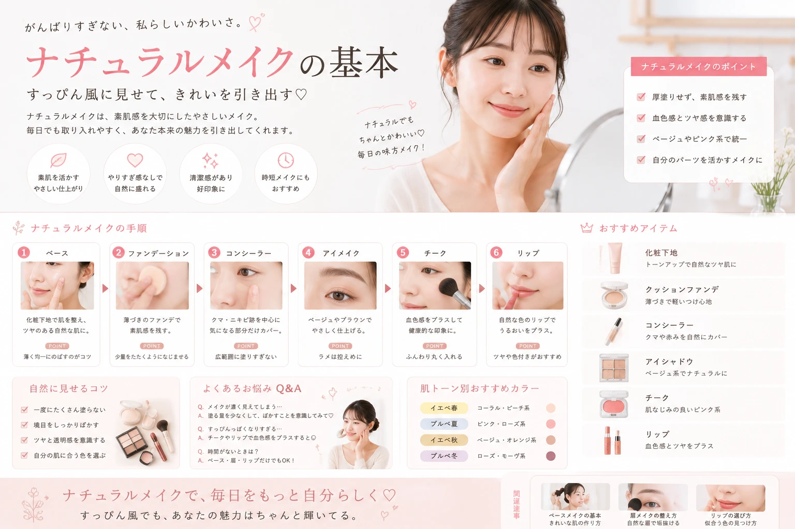

ナチュラルメイクは、 「何もしないメイク」ではありません。
肌の質感や眉、目元、血色感を 自然に整えることで、 清潔感のある垢抜けた印象を作れます。
大切なのは、 コスメを重ねすぎないこと。 まずは基本のポイントから 少しずつ取り入れてみましょう。

キレイは、日常の積み重ね。

「頑張っている感」は出さずに、 自然にかわいく見せるメイクの基本。
ナチュラルメイクは、 「何もしないメイク」ではありません。
肌の質感や眉、目元、血色感を 自然に整えることで、 清潔感のある垢抜けた印象を作れます。
大切なのは、 コスメを重ねすぎないこと。 まずは基本のポイントから 少しずつ取り入れてみましょう。
ナチュラルメイクでは、 ファンデーションを厚く塗るよりも 肌の気になる部分だけを 自然に整えるのがポイント。
化粧下地を薄く伸ばし、 気になる部分だけ コンシーラーを使います。
眉は顔全体の印象を左右する 大切なパーツです。
最初から形を大きく変えるより、 自眉を活かしながら 足りない部分を描き足しましょう。
眉頭を濃くしすぎず、 眉尻に向かって 少しずつ整えると自然に見えます。
ナチュラルに仕上げたい日は、 肌なじみのよい ベージュやブラウン系カラーが 使いやすいです。
明るいベースカラーを まぶた全体に。
目のキワに細く入れる。
ダマにならないよう 軽く仕上げる。
チークは濃く入れすぎると 一気にメイク感が出やすい部分。
少量を頬の高い位置から 少しずつ重ねると、 自然な血色感を作りやすくなります。
「足りないかな？」くらいから 少しずつ足していくのがコツ。
ナチュラルメイクなら、 自分の唇の色から大きく離れない カラーが使いやすいです。
発色が強い場合は、 指で軽くぼかすだけでも やわらかい印象になります。
ナチュラルな印象を作るには、 メイクだけでなく 髪のまとまりも大切です。
「少し物足りないかな？」 くらいで一度完成させて、 鏡で全体を見るのがおすすめです。
下地＋必要な部分だけ コンシーラー。
足りない部分だけ 眉を描く。
ベージュ系シャドウ＋ マスカラ。
チーク＋リップで 仕上げる。
ナチュラルメイクで大切なのは、 コスメをたくさん使うことではありません。
この基本を押さえるだけでも、 毎日のメイクはかなりシンプルになります。